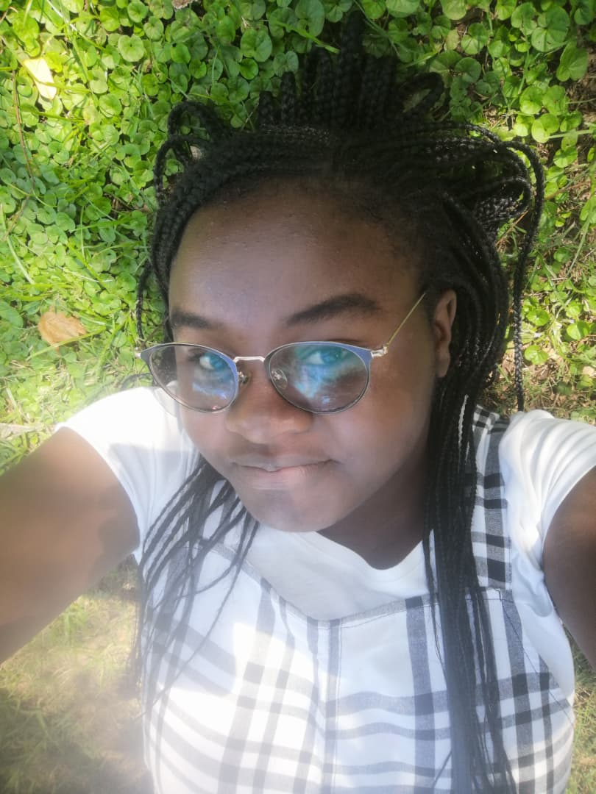

Welcome to my portfolio website! I am a passionate and dedicated individual with a strong interest in technology and creativity. I have a diverse skill set that includes programming, graphic design, and content creation. I am always eager to learn new things and take on new challenges. This portfolio showcases some of my work and projects that I have been involved in. Feel free to explore and get in touch if you would like to collaborate or learn more about me!
I am a second year student at National collage of Information Technology. I am currently pursuing a diploma in computing with business management.
I am a self-motivated and enthusiastic individual who is always looking for new opportunities to learn and grow. I am confident in my abilities and am always willing to take on new challenges. I am a team player and enjoy collaborating with others to achieve common goals. I am also a creative thinker and enjoy coming up with innovative solutions to problems.
Apart from my academic pursuits, I am also involved in various extracurricular activities and community service initiatives. I have a passion for helping others and making a positive impact in my community. I am also interested in volunteering and participating in community events. As well as loving myself, I am also passionate about making a difference in the world.
